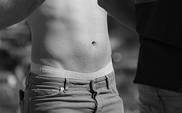

Dolores Park
On a sunny day there's hardly a better place to be in the city than Dolores Park. Sometimes lovingly referred to as the City's back yard, or at least for the Mission and Castro neighborhoods, the park is usually packed with people. One time we were driving back from South City and topped the hill at 19th. It was Pink Saturday, the day before Gay Pride in San Francisco. The park had just undergone a mulit-million dollar renovation and had been closed for far too long.
There wasn't a spot of green grass to be seen. It was solid flesh, blankets and festivities.
It's a great place to take the pup for a walk, kick back and enjoy the view, or for some, scope in on some mighty fine eye-candy.